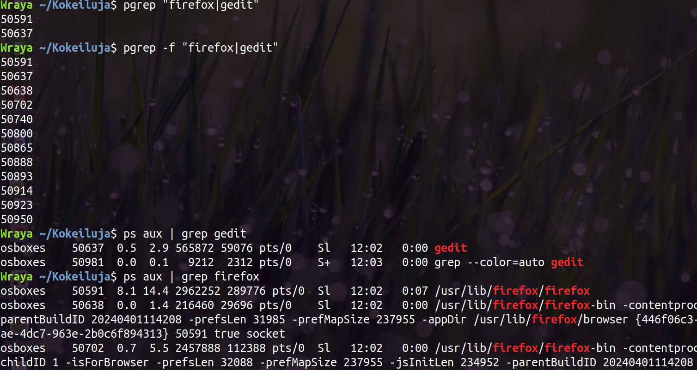
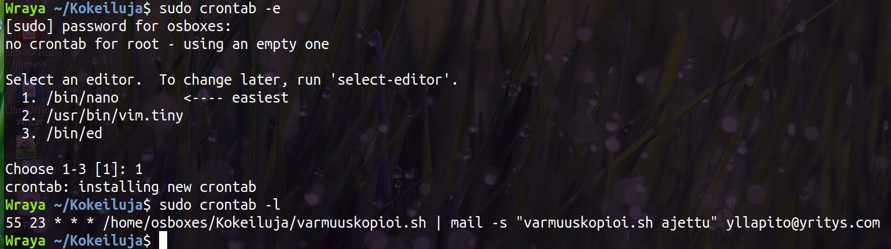
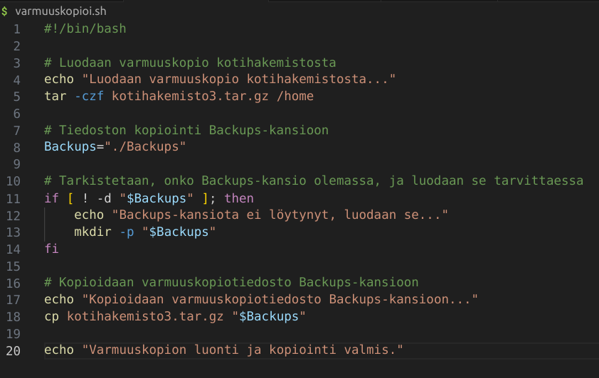
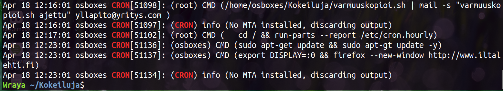

Selvitä prosessien ID-numerot ja mikä prioriteetti
Avasin komentorivillä firefox- ja pico-sovellukset.
Ensimmäiseksi tarkastelin prosesseja system monitorilla, sitten komentorivillä ps aux-komennolla ja sitten myös htopin kautta.
Firefoxin PID oli 42770 (ja firefoxiin olit muitakin prosesseja auki, mutta tuo oli se pääprosessi) ja picon PID-prosesseja oli auki kaksi (koska olin avannut sen kahteen kertaan...) 42598 ja 43040.
Molempien ohjelmien prioriteetti oli normaali.
Prosessien nice-arvojen muuttaminen
Ensimmäinen yritys muuttaa firefoxin nice-arvoja epäonnitui. Todennäköisesti, koska yritin muuttaa arvoja -merkkisiksi (jolloin prioriteetti olisi normaalia korkeampi), joka nostaisi prioriteettia normaalia korkeammalle. Minulla ei ollut tähän oikeuksia, koska ehkä järjestelmä haluaa suojata, etten nosta turhanpäiväistä prosessia liian korkealle, joka haittaisi tärkeimpien prosessien toimintaa. Sen sijaan nice-arvojen muuttaminen positiivisten lukujen kanssa onnistui.
Prosessien lopettaminen kill-komennolla
Avasin muutamia ohjelmia, jotta voin ne sulkea ja tarkistin jobs-komennolla tietoja. Sen jälkeen lopetin kolmantena olevan ohjelman. Jostain syystä tulostus ohjelman päättymisestä tuli vasta sen jälkeen kun tein uuden komennon (jolla etsin PID-numeron geditille). Gedit-ohjelman lopetin kill komennolla, jossa perässä suljettavan ohjelman PID.
Tämän jälkeen avasin ohjelmat uudestaan, jotta pystyin kokeilemaan materiaalissa olevat muut lopettamiskomennot. kill -9 pakottaa ohjelman sulkeutumisen (toki tässä ei tarpeen, koska aikaisemminkin sulkeutui ilman järeämpiä keinoja). Toki ensimmäinen ei toiminut, koska PID-numero taisi viitata johonkin muuhun prosessiin, kuin itse wireshark-ohjelmaan.
Kokeilin myös kill -HUP -lopettamissignaalia.
Sovellusten etsiminen grep-komennolla
Hain pgrep-komennolla firefoxin ja geditin tiedot. Pgrep tulostaa vain PID-numeron. Perus pgrep hakee vain prosessit, joissa vain hakusana ja valitsimella -f saa haettua myös ne prosessit, joissa jossain kohti mainittuna hakusana.

Kokeilin myös hakea kaikkia käyttäjän (minun) prosesseja -u valitsimella.
Sovellusten lopettaminen yhdellä komennolla
Käytin pkill komentoa, johon putkitin kaikki sovellukset, jotka halusin sulkea.
Ajastusten luominen crontabiin.
Ensimmäinen ajastus firefoxin ja iltalehden avaaminen ainakin onnistui (kokeilin tehdessä senhetkisellä ajalla ja vasta sitten muutin ajettavaksi maanantaisin klo 8.58.
Netistä löytyneen ohjeen mukaan root-käyttäjän ajastukset ajetaan sudo crontab -käskyllä. Joten viimeisin ajastus on eri crontab-tiedostossa, jotta se ajetaan juuritasolla.
varmuuskopioi.sh tiedosto on muokattu versio aiemmin tehdystä yllapito.sh ohjelmasta.

Testattu vielä tämänhetkisellä ajalla ja katsottu grep CRON /var/log/syslog-komennolla logia ajetuista ohjelmista. Logista näkyy herja, ettei minulla ole asennettuna Mail Transfer Agencya, joten sähköpostia ei lähetetä. varmuuskopioi-juttu ja firefox taitavat toimia, tuosta update-ajastuksesta mietin, että mahtaako toimia, kun yleensä minulta aina halunnut salasanan...

Vaihdettu update-ajastus sudo crontab -tiedostoon, jos ohjelma onnistuisi root-tasolla. Login perusteella ehkä toimisi (ainakin nyt tämänkin kohdalle tuli tuo herja, ettei ole MTA ja output discarded, mitä ei aikaisemmin tullut.